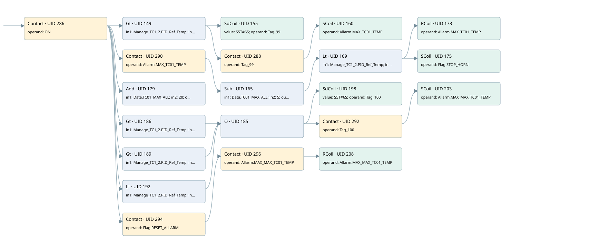

max tc01 temperature
allarms 3 · 검색 색인 순서 1 · 원본 내부 NID 추정 1
백업 PLF 원본의 3162942 바이트 위치에서 복원한 XML. 검색 문서 1979의 객체 키 16102200716b000000000000와 연결했다. 이름 해석 31/31개. 남은 RefId는 상수 또는 미해석 참조다.
연결 구조 다시 그리기
원본 Part/PCon/Wire를 이용한 연결도다. TIA 화면의 래더 배치 또는 실행 결과를 재현한 그림은 아니다. 핀 연결은 아래 표와 원본 XML을 기준으로 읽는다. 노드 위에 마우스를 두면 피연산자 이름을 볼 수 있다.

접점·코일·블록과 피연산자
| Part UID | Gate | Negated 핀 | 연결 피연산자 |
|---|---|---|---|
| 286 | Contact | operand = ON | |
| 149 | Gt | in1 = Manage_TC1_2.PID_Ref_Temp; in2 = Data.TC01_MAX_ALL | |
| 155 | SdCoil | value = S5T#6S; operand = Tag_99 | |
| 288 | Contact | operand = Tag_99 | |
| 160 | SCoil | operand = Allarm.MAX_TC01_TEMP | |
| 290 | Contact | operand = Allarm.MAX_TC01_TEMP | |
| 165 | Sub | in1 = Data.TC01_MAX_ALL; in2 = 5; out = app00 | |
| 169 | Lt | in1 = Manage_TC1_2.PID_Ref_Temp; in2 = app00 | |
| 173 | RCoil | operand = Allarm.MAX_TC01_TEMP | |
| 175 | SCoil | operand = Flag.STOP_HORN | |
| 179 | Add | in1 = Data.TC01_MAX_ALL; in2 = 20; out = max_max_tc1 | |
| 186 | Gt | in1 = Manage_TC1_2.PID_Ref_Temp; in2 = max_max_tc1 | |
| 189 | Gt | in1 = Manage_TC1_2.PID_Ref_Temp; in2 = 1250.0 | |
| 192 | Lt | in1 = Manage_TC1_2.PID_Ref_Temp; in2 = -60.0 | |
| 185 | O | ||
| 198 | SdCoil | value = S5T#6S; operand = Tag_100 | |
| 292 | Contact | operand = Tag_100 | |
| 203 | SCoil | operand = Allarm.MAX_MAX_TC01_TEMP | |
| 294 | Contact | operand = Flag.RESET_ALLARM | |
| 296 | Contact | operand = Allarm.MAX_MAX_TC01_TEMP | |
| 208 | RCoil | operand = Allarm.MAX_MAX_TC01_TEMP |
접점 경로를 펼친 조건식
Contact·O/A·비교기의 원본 연결을 읽기 쉽게 펼친 보조 해석이다. POWER는 전원 레일 시작을 뜻한다. 호출 블록·에지·타이머의 내부 동작과 다중 쓰기 순서는 이 표로 실행 검증하지 않았다. 미해석 핀과 RefId는 원문 연결표에서 확인한다.
| UID | 동작 | 대상 | 원본 접점 경로 | 내용 |
|---|---|---|---|---|
| 155 | SdCoil | Tag_99 | (ON AND [Manage_TC1_2.PID_Ref_Temp > Data.TC01_MAX_ALL]) | 시간 동작 SdCoil; 타이머 의미 추가 확인 / 시간 인자 S5T#6S |
| 160 | SCoil | Allarm.MAX_TC01_TEMP | ((ON AND [Manage_TC1_2.PID_Ref_Temp > Data.TC01_MAX_ALL]) AND Tag_99) | 조건 성립 시 Set |
| 173 | RCoil | Allarm.MAX_TC01_TEMP | (Sub UID 165.eno (블록 동작 확인) AND [Manage_TC1_2.PID_Ref_Temp < app00]) | 조건 성립 시 Reset |
| 175 | SCoil | Flag.STOP_HORN | (Sub UID 165.eno (블록 동작 확인) AND [Manage_TC1_2.PID_Ref_Temp < app00]) | 조건 성립 시 Set |
| 198 | SdCoil | Tag_100 | ((ON AND [Manage_TC1_2.PID_Ref_Temp > max_max_tc1]) OR (ON AND [Manage_TC1_2.PID_Ref_Temp > 1250.0]) OR (ON AND [Manage_TC1_2.PID_Ref_Temp < -60.0])) | 시간 동작 SdCoil; 타이머 의미 추가 확인 / 시간 인자 S5T#6S |
| 203 | SCoil | Allarm.MAX_MAX_TC01_TEMP | (((ON AND [Manage_TC1_2.PID_Ref_Temp > max_max_tc1]) OR (ON AND [Manage_TC1_2.PID_Ref_Temp > 1250.0]) OR (ON AND [Manage_TC1_2.PID_Ref_Temp < -60.0])) AND Tag_100) | 조건 성립 시 Set |
| 208 | RCoil | Allarm.MAX_MAX_TC01_TEMP | ((ON AND Flag.RESET_ALLARM) AND Allarm.MAX_MAX_TC01_TEMP) | 조건 성립 시 Reset |
원본 배선 연결
| Wire UID | 동일 Wire 연결 끝점 |
|---|---|
| 298 | Powerrail {} ↔ Part 286.in |
| 240 | ORef 209 (ON) ↔ Part 286.operand |
| 287 | Part 286.out ↔ Part 149.pre ↔ Part 290.in ↔ Part 179.en ↔ Part 186.pre ↔ Part 189.pre ↔ Part 192.pre ↔ Part 294.in |
| 241 | ORef 210 (Manage_TC1_2.PID_Ref_Temp) ↔ Part 149.in1 |
| 242 | ORef 211 (Data.TC01_MAX_ALL) ↔ Part 149.in2 |
| 243 | Part 149.out ↔ Part 155.in ↔ Part 288.in |
| 244 | ORef 212 (S5T#6S) ↔ Part 155.value |
| 245 | ORef 213 (Tag_99) ↔ Part 155.operand |
| 246 | ORef 214 (Tag_99) ↔ Part 288.operand |
| 289 | Part 288.out ↔ Part 160.in |
| 248 | ORef 215 (Allarm.MAX_TC01_TEMP) ↔ Part 160.operand |
| 250 | ORef 216 (Allarm.MAX_TC01_TEMP) ↔ Part 290.operand |
| 291 | Part 290.out ↔ Part 165.en |
| 252 | ORef 217 (Data.TC01_MAX_ALL) ↔ Part 165.in1 |
| 253 | ORef 218 (5) ↔ Part 165.in2 |
| 255 | Part 165.eno ↔ Part 169.pre |
| 254 | Part 165.out ↔ ORef 219 (app00) |
| 256 | ORef 220 (Manage_TC1_2.PID_Ref_Temp) ↔ Part 169.in1 |
| 257 | ORef 221 (app00) ↔ Part 169.in2 |
| 258 | Part 169.out ↔ Part 173.in ↔ Part 175.in |
| 259 | ORef 222 (Allarm.MAX_TC01_TEMP) ↔ Part 173.operand |
| 260 | ORef 223 (Flag.STOP_HORN) ↔ Part 175.operand |
| 262 | ORef 224 (Data.TC01_MAX_ALL) ↔ Part 179.in1 |
| 263 | ORef 225 (20) ↔ Part 179.in2 |
| 264 | Part 179.out ↔ ORef 226 (max_max_tc1) |
| 265 | ORef 227 (Manage_TC1_2.PID_Ref_Temp) ↔ Part 186.in1 |
| 266 | ORef 228 (max_max_tc1) ↔ Part 186.in2 |
| 267 | Part 186.out ↔ Part 185.in1 |
| 268 | ORef 229 (Manage_TC1_2.PID_Ref_Temp) ↔ Part 189.in1 |
| 269 | ORef 230 (1250.0) ↔ Part 189.in2 |
| 270 | Part 189.out ↔ Part 185.in2 |
| 271 | ORef 231 (Manage_TC1_2.PID_Ref_Temp) ↔ Part 192.in1 |
| 272 | ORef 232 (-60.0) ↔ Part 192.in2 |
| 273 | Part 192.out ↔ Part 185.in3 |
| 274 | Part 185.out ↔ Part 198.in ↔ Part 292.in |
| 275 | ORef 233 (S5T#6S) ↔ Part 198.value |
| 276 | ORef 234 (Tag_100) ↔ Part 198.operand |
| 277 | ORef 235 (Tag_100) ↔ Part 292.operand |
| 293 | Part 292.out ↔ Part 203.in |
| 279 | ORef 236 (Allarm.MAX_MAX_TC01_TEMP) ↔ Part 203.operand |
| 281 | ORef 237 (Flag.RESET_ALLARM) ↔ Part 294.operand |
| 295 | Part 294.out ↔ Part 296.in |
| 282 | ORef 238 (Allarm.MAX_MAX_TC01_TEMP) ↔ Part 296.operand |
| 297 | Part 296.out ↔ Part 208.in |
| 284 | ORef 239 (Allarm.MAX_MAX_TC01_TEMP) ↔ Part 208.operand |
식별자 해석 근거 31개
| ORef UID | RefId | 이름 | IdentXmlPart 파일 | 해석 방법 |
|---|---|---|---|---|
| 209 | 1 | ON | 0686-IdentXmlPart.xml | UID/RID + search-text + NID agreement |
| 210 | 169 | Manage_TC1_2.PID_Ref_Temp | 0684-IdentXmlPart.xml | UID/RID + search-text + NID agreement |
| 211 | 5 | Data.TC01_MAX_ALL | 0684-IdentXmlPart.xml | UID/RID + search-text + NID agreement |
| 213 | 9 | Tag_99 | 0686-IdentXmlPart.xml | UID/RID + search-text + NID agreement |
| 212 | 8 | S5T#6S | 0683-IdentXmlPart.xml | literal candidate: UID/RID/NID + nearby named declarations + search-text agreement |
| 214 | 9 | Tag_99 | 0686-IdentXmlPart.xml | UID/RID + search-text + NID agreement |
| 215 | 11 | Allarm.MAX_TC01_TEMP | 0684-IdentXmlPart.xml | UID/RID + search-text + NID agreement |
| 216 | 11 | Allarm.MAX_TC01_TEMP | 0684-IdentXmlPart.xml | UID/RID + search-text + NID agreement |
| 217 | 5 | Data.TC01_MAX_ALL | 0684-IdentXmlPart.xml | UID/RID + search-text + NID agreement |
| 218 | 13 | 5 | 0683-IdentXmlPart.xml | literal candidate: UID/RID/NID + nearby named declarations + search-text agreement |
| 219 | 14 | app00 | 0685-IdentXmlPart.xml | UID/RID + search-text + NID agreement |
| 220 | 169 | Manage_TC1_2.PID_Ref_Temp | 0684-IdentXmlPart.xml | UID/RID + search-text + NID agreement |
| 221 | 14 | app00 | 0685-IdentXmlPart.xml | UID/RID + search-text + NID agreement |
| 222 | 11 | Allarm.MAX_TC01_TEMP | 0684-IdentXmlPart.xml | UID/RID + search-text + NID agreement |
| 223 | 16 | Flag.STOP_HORN | 0684-IdentXmlPart.xml | UID/RID + search-text + NID agreement |
| 224 | 5 | Data.TC01_MAX_ALL | 0684-IdentXmlPart.xml | UID/RID + search-text + NID agreement |
| 225 | 18 | 20 | 0683-IdentXmlPart.xml | literal candidate: UID/RID/NID + nearby named declarations + search-text agreement |
| 226 | 19 | max_max_tc1 | 0685-IdentXmlPart.xml | UID/RID + search-text + NID agreement |
| 227 | 169 | Manage_TC1_2.PID_Ref_Temp | 0684-IdentXmlPart.xml | UID/RID + search-text + NID agreement |
| 228 | 19 | max_max_tc1 | 0685-IdentXmlPart.xml | UID/RID + search-text + NID agreement |
| 229 | 169 | Manage_TC1_2.PID_Ref_Temp | 0684-IdentXmlPart.xml | UID/RID + search-text + NID agreement |
| 230 | 171 | 1250.0 | 0683-IdentXmlPart.xml | literal candidate: UID/RID/NID + nearby named declarations + search-text agreement |
| 231 | 169 | Manage_TC1_2.PID_Ref_Temp | 0684-IdentXmlPart.xml | UID/RID + search-text + NID agreement |
| 232 | 172 | -60.0 | 0683-IdentXmlPart.xml | literal candidate: UID/RID/NID + nearby named declarations + search-text agreement |
| 234 | 22 | Tag_100 | 0686-IdentXmlPart.xml | UID/RID + search-text + NID agreement |
| 233 | 8 | S5T#6S | 0683-IdentXmlPart.xml | literal candidate: UID/RID/NID + nearby named declarations + search-text agreement |
| 235 | 22 | Tag_100 | 0686-IdentXmlPart.xml | UID/RID + search-text + NID agreement |
| 236 | 23 | Allarm.MAX_MAX_TC01_TEMP | 0684-IdentXmlPart.xml | UID/RID + search-text + NID agreement |
| 237 | 24 | Flag.RESET_ALLARM | 0684-IdentXmlPart.xml | UID/RID + search-text + NID agreement |
| 238 | 23 | Allarm.MAX_MAX_TC01_TEMP | 0684-IdentXmlPart.xml | UID/RID + search-text + NID agreement |
| 239 | 23 | Allarm.MAX_MAX_TC01_TEMP | 0684-IdentXmlPart.xml | UID/RID + search-text + NID agreement |
검색 코드 보조 자료
참조 명칭을 찾기 위한 자료이며 실행 순서나 AND/OR 관계는 위 연결표로 확인한다.
"on" "manage_tc1_2".pid_ref_temp "data".tc01_max_all "tag_99" s5t#6s "allarm".max_tc01_temp sub "data".tc01_max_all 5 "manage_tc1_2".pid_ref_temp #app00 "allarm".max_tc01_temp #app00 "flag".stop_horn add "data".tc01_max_all 20 #max_max_tc1 "manage_tc1_2".pid_ref_temp #max_max_tc1 "tag_100" s5t#6s "tag_100" "allarm".max_max_tc01_temp "manage_tc1_2".pid_ref_temp 1250.0 "manage_tc1_2".pid_ref_temp -60.0 "flag".reset_allarm "allarm".max_max_tc01_temp "allarm".max_max_tc01_temp "tag_99" "allarm".max_tc01_temp